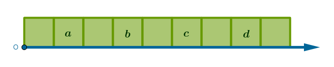
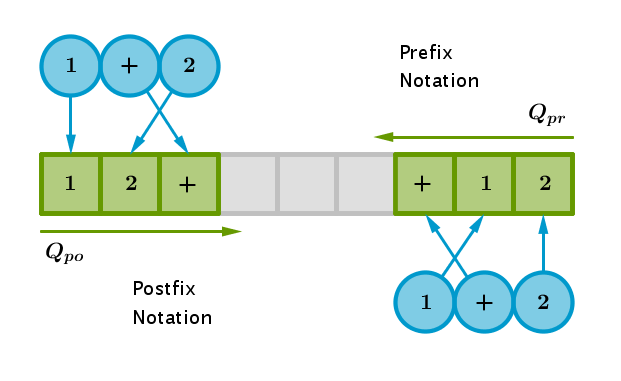

as a whole is a machine that acts on arbitrary, properly syntaxed arithmetic expressions of finite length.
In its simplest traditional form a legal arithmetic expression is a collection of arithmetic operators and operands. Operands are also called operator's arguments or just arguments.
Operands
We will start with non-negative integer operands:
$$0, 1, 2, 3, \dots$$and the following
Operators
+ (addition), ASCII decimal 43 - (subtraction), ASCII decimal 45 * (multiplication), ASCII decimal 42 / (division), ASCII decimal 47 % (modulus), ASCII decimal 37
Every operator has an attribute called arity that reflects the number of operands or arguments an operator acts on.
Operators that act on a single argument are called unary and such operators are abound in the C programming language, for example: increment (++), decrement (--), address of (&), dereference (*), one's complement (~), etc.
Operators that act on a pair of arguments are called binary. All the arithmetic operators in the above list are binary.
Operators that act on three arguments are called tertiary and so on.
An operator is executed when the action that it prescribes is taken against its arguments and a numerical, in our case, result is produced, output or recorded. For example, an execution of the addition operator in the following expression:
$$1 + 2$$produces the following result: \(3\). Once a result of operator's execution is obtained, it is permissible to replace the original expression, \(1+2\), with that result, \(3\).
Direction
Textual (symbolic) information, represented as a linear container, may be processed (parsed) in two logical directions: left to right and right to left. It is a Western tradition to use the former. To give such words as left, first, right, last, before, after and the like an unambiguous meaning we shall adapt the following convention.
The concept of reference frame is defined in physics as an arbitrary coordinate system, rectangular, polar, spherical, cylindrical, etc., and a clock. For the purposes of this, computer science, discussion we shall lose the clock and keep a simplified, one-dimensional, coordinate system in a form of a straight line with a fixed origin point \(O\):
The above qualifiers then are relative - they become meaningful when at least two arbitrary items are temporarily fixed. For example, between items \(a\) and \(b\) the item \(a\) is left, first, before and prior while the item \(b\) is right, last, after and post. However, if we move away from the origin then in the \(\{b,c\}\) pair, for example, the item \(b\) is left, first, before and prior while the item \(c\) is right, last, after and post. In the \(\{c,d\}\) pair the item \(c\) is left and first while the item \(d\) is right and last and so on.
Find the similarity between the concepts of directionality and order or order relation taught in computer science and various mathematics courses: Number Theory, Discrete Mathematics, Formal Logic, etc.
Notation
is a mechanism used to record a given arithmetic expression by fixing the position of an operator relative to its operand(s). The three popular notations are infix, prefix and postfix.
Infix Notation
places a binary operator between its operands:
$$1 + 2$$ $$3 - 4$$ $$5 \times 6$$
Prefix Notation
places an operator before or prior to its operands (if a logical left to right order of expression's processing is used, see Direction section above). The previous expressions rendered in an infix notation are recorded in a prefix notation as follows:
$$+12$$ $$-34$$ $$\times 56$$
Postfix Notation
places an operator after or post its operands (if a logical left to right order of expression's processing is used, see Direction section above). The previous expressions rendered in an infix notation are recorded in a postfix notation as follows:
$$12+$$ $$34-$$ $$56 \times $$Observe that with prefix and postfix notations the need for boundaries between operands becomes necessary as it is not clear what does \(123+\), for example, actually mean - is it \(1+23\) or \(12+3\)?
Collisions
In an expression written in an infix notation two operators may collide - share an argument:
$$E = 1 + 2 \times 3$$In \(E\) it is not entirely obvious which operator should be executed first - addition, acting on \(1\) and \(2\), or multiplication, acting on \(2\) and \(3\)?
Every operator has an attribute called precedence that is used to resolve collisions of the above type - between two colliding operators the one with a higher precedence is executed first.
Sorting the list of our operators in descending precedence order, from highest to lowest, we obtain:
multiplication, division, modulus addition, subtraction
At least initially, an operator should have only one (and constant) precedence level.
In the table above multiple operators have the same precedence. When two such operators collide:
$$1 + 2 - 3$$it is not entirely obvious which operator should be executed first.
Every operator has an attribute called associativity that is used to resolve collisions of operators that have the same precedence. In addition to the word associativity another two terms are sometimes used: recursion and grouping.
When a decision is made that multiple colliding operators of the same precedence should be executed left to right - meaning that the the left-most operator should be executed first - then such operators are called left-associative, left-recursive, grouping left to right or just grouping left.
When a decision is made that multiple colliding operators of the same precedence should be executed right to left - meaning that the the right-most operator should be executed first - then such operators are called right-associative, right-recursive, grouping right to left or just grouping right.
At least initially, all the operators with the same precedence should have only one (and constant, and the same) associativity type.
An exponentiation operator, ^, ASCII decimal \(94\), is an example of a right-associative operator:
$$2 \wedge 3 \wedge 2 = 2 \wedge_2 3 \wedge_1 2 = 2 \wedge 9 = 512$$All our operators, however, are left-associative. As such:
$$9 - 4 + 1 = 9 -_1 4 +_2 1 = 6$$ $$4 \div 2 \times 3 = 4 \div_1 2 \times_2 3 = 6$$In the sample expressions above we have used sub indexes to indicate the order of operators' execution.
These (silly) examples demonstrate that an infix notation is begging for generosity with (invasive)
OOEMs
or Order Of Execution Modifiers. To help us say what we mean and bend an expression rendered in an infix form to our will a special type of operator is used - parenthesis (traditionally).
To designate a left-hand side of order of execution modification we will use a left parenthesis, (, ASCII decimal \(40\). To designate a right-hand side of order of execution modification we will use a right parenthesis, ), ASCII decimal \(41\).
For example, according to the previously described precedence rules, the following expression:
$$1 + 2 \times 3$$yields \(7\). However, if addition is to be executed first, the same expression should be augmented as follows:
$$( 1 + 2 ) \times 3$$yielding \(9\).
If multiple parenthesis are used to modify the order of execution of multiple operators then the operator located in the innermost parenthesis is executed first. In a sample expression below we again use sub indexes to designate the order of operators' execution:
$$((1 + 2) \times 3 + 4) \times 5 =$$ $$((1 +_1 2) \times_2 3 +_3 4) \times_4 5 =$$ $$(3 \times_1 3 +_2 4) \times_3 5 =$$ $$(9 +_1 4) \times_2 5 =$$ $$13 \times_1 5 = 65$$Observe that the algorithmicity of the above computational process becomes evident: we use the process mentioned in Operators section - replace an expression with its result and, in our case, repeat.
Before moving on to the Shunting Yard algorithm proper we observe that the remaining notations, prefix and postfix, are parenthesis-free. It means that with these notations:
the physical location of an operator within the expression (container) is equated to the order of its execution
Put another way, prefix and postfix are "execute when encountered" notations. For example, the following expression rendered in an infix form as:
$$1 + 2 \times 3$$renders in a prefix notation as:
$$+1 \times 23$$and in a postfix form as:
$$123 \times +$$Correspondingly, a parenthesised expression captured in an infix notation:
$$(1 + 2) \times 3$$renders in a prefix form as:
$$\times +123$$and in a postfix form as:
$$12+3 \times$$We do not know how to compute the values of expressions in prefix and postfix forms yet but we should understand how to convert an expression in an infix notation into its equivalent in either prefix or postfix form manually.
One way to do that is to use the method of substitution. Let \(E_{in}\) stand for an expression rendered in an infix notation, \(E_{pr}\) stand for an expression rendered in a prefix form and \(E_{po}\) stand for an expression rendered in a postfix form. To convert the following sample expression rendered in an infix notation:
$$(1 + 2) \times 3$$to its prefix and postfix equivalents follow these steps:
$$E_{in} = (1 + 2) \times 3$$ $$(1 + 2) = \omega$$ $$E_{in} = \omega \times 3$$ $$E_{pr} = \times \omega 3$$ $$\omega = (1 + 2)_{in} = +12_{pr}$$ $$E_{pr} = \times +123$$ $$E_{po} = \omega 3 \times$$ $$\omega = (1 + 2)_{in} = 12+_{po}$$ $$E_{po} = 12+ 3 \times$$The above method is borrowed verbatim from Mathematical Analysis where it is used to compute derivatives of composite functions:
$$\cos'(\sin(x))$$ $$\sin(x) = \omega$$ $$\cos'(\omega) = - \sin(\omega) \times \omega'$$ $$\omega' = \sin'(x) = \cos(x)$$ $$\cos'(\sin(x)) = - \sin(\sin(x)) \times \cos(x)$$This substitution method is not entirely computational - it mimics a way a human would perform these tasks with pen and paper. Our goal, however, is automation - the heart and soul of the Shunting Yard algorithm whose inner workings we shall understand in depth by the end of this tutorial.
Nonetheless, it is profitable to spend a certain amount of time practicing manual conversions of expressions rendered in an infix notation to their prefix and postfix equivalents before moving on - be able to convert simple expressions in your mind, without pen and paper.
For example, it should be clear why:
$$if \quad E_{in} = 1 + 2 * (3 + 4 * (5 + 6 * (7 + 8))) \quad then$$ $$E_{pr} = +1*2+3*4+5*6+78$$ $$E_{po} = 12345678+*+*+*+$$In the expression below we have numbered the like operators in a left to right fashion to make them unique:
$$E_{in} = 1 +_1 2 *_1 (3 +_2 4 *_2 (5 +_3 6 *_3 (7 +_4 8)))$$To convince yourself that you understand the manual conversion process find the corresponding operators in the expressions rendered in prefix and postfix forms:
$$E_{pr} = +_?1*_?2+_?3*_?4+_?5*_?6+_?78$$ $$E_{po} = 12345678+_?*_?+_?*_?+_?*_?+_?$$
Shunting Yard Algorithm
invented by the Dutch computer scientist (and a theoretical physicist by education) Edsger W. Dijkstra in 1961, is a two-pass rearrange-then-compute algorithm used to calculate the values of expressions in an infix form by first converting them into a prefix or postfix form (or an abstract syntax tree - not discussed here) and then computing the result.
In our implementation algorithm's both passes use two types of restrictive linear containers known as queue and stack - one container of each type. Queues and stacks impose limitations on a way a linear container is populated and vacated - new items can be added to and existing items can be removed from such a container only via its extremities.
In a queue new items are added to one extremity while the existing items are removed from the opposite extremity. This type of container's population control effectively removes an item that was added to a container least recently.
For example, assume that three items, \(1, 2, 3\), were added to a queue in that order without any intervening removal requests. Logically such a queue may be represented as an abstract array of unspecified size as follows:
$$[3][2][1]$$A request to remove one item from the above container will result in a removal of item \(1\), since it is a least recently added item, after which a container will have the following contents:
$$[3][2]$$In an abbreviated from queues are sometimes called FIFO containers, where FIFO stands for First In First Out.
In a stack, on the other hand, new items are added to and existing items are removed from a container via the same extremity. This type of container's population control effectively removes an item that was added to a container most recently.
For example, assume that the same three items were added to a stack in the same order without any intervening removal requests. Logically such a stack may be represented as an abstract array of unspecified size as follows:
$$[3][2][1]$$A request to remove one item from the above container will result in a removal of item \(3\), since it is a most recently added item, after which a container will have the following contents:
$$[2][1]$$In an abbreviated from stacks are sometimes called LIFO containers, where LIFO stands for Last In First Out.
We observe in passing that a queue's extremities are sometimes labeled as head and tail while a stack's only operational extremity is sometimes labeled as top for ease of reference.
Conversion
of an input arithmetic expression rendered in an infix form into its equivalent rendered in a prefix or postfix form (or an abstract syntax tree) is the purpose of the first pass of the Shunting Yard algorithm through its input.
From now on we assume that \(Q_{in}\) is an input queue that contains an input arithmetic expression rendered in an infix notation, \(S\) is a stack, \(Q_{pr}\) is an output queue that contains the arithmetic expression rendered in a prefix form and \(Q_{po}\) is an output queue that contains the arithmetic expression rendered in a postfix form.
Whole Pass, At Once
In the first, conversion, pass a stack is used to temporarily store only operators while a queue is used to store operands and operators effectively rendering an input expression in the requested form - prefix or postfix.
Here is an outline of the conversion algorithm in a much simplified form:
while ( input items remain ) { obtain next input item if ( item is an operand ) add operand to output queue else add operator to stack } while ( stack not empty ) { remove operator from stack add operator to output queue }
The above algorithm is output notation-neutral - it can be used to convert an input expression rendered in an infix form into its equivalent in a prefix or postfix notation.
To convert an expression rendered in an infix form into its equivalent in a:
- prefix form: read the input and write the output right to left starting from the right-most input/output position
- postfix form: read the input and write the output left to right starting from the left-most input/output position
Sample Calculation
Infix to Prefix:
$$E_{in} = 1 + 2$$ $$Q_{in} = [1][+][2]$$ $$Q_{pr} = [2]$$ $$S = [+]$$ $$Q_{pr} = [1][2]$$ $$S = \{\}$$ $$Q_{pr} = [+][1][2]$$ $$E_{pr} = +12$$where \(\{\}\) represents an empty stack (set).
Infix to Postfix:
Precedence
Currently our conversion algorithm does not handle collisions of operators with different precedence levels. For example, the following expression in an infix notation:
$$E_{in} = 1 + 2 \times 3$$renders correctly in a postfix but not in a prefix form (prove it). The following expression in an infix notation:
$$E_{in} = 2 \times 3 + 4$$renders correctly in a prefix but not in a postfix form (prove it). It follows then that the original version of the conversion algorithm may work for some favorable expressions for some output notations.
Since the algorithm must work for arbitrary expressions for both output notations, augment it to handle collisions of operators with different precedence levels as follows:
while ( input items remain ) { obtain next input item if ( item is an operand ) add operand to output queue else next operator = this input item previous operator = the one at top of stack if ( next operator's precedence < previous operator's precedence ) { remove previous operator from stack add previous operator to output queue } add next operator to stack while ( stack not empty ) { remove operator from stack add operator to output queue }
Observe that, again, the current modification of the algorithm respects its previous version keeping it output notation-neutral.
Commentary
Starting from this version of the conversion algorithm it becomes clear why a stack is used to temporarily store processed operators - because a stack is an effective input reverser.
Assume that a queue \(Q\) has the following contents:
$$Q = [A][B][C]$$Removing the input items from \(Q\)'s right-most extremity and adding them to a stack \(S\), we obtain:
$$Q = \{\}$$ $$S = [A][B][C]$$Since items can enter and leave a stack only through one of its extremities (left-most in this case), by removing the items from \(S\) and adding them to \(Q\), we obtain:
$$Q = [C][B][A]$$which effectively reverses the order of items in \(Q\). It follows that by repeating the above exercise an even number of times we will restore the order of items in \(Q\) to its original.
Reversing the order of operators is a frequent task while computing the value of an arithmetic expression rendered in an infix notation. Recall our earlier observation that prefix and postfix are execute-when-encountered notations. By using a stack to reverse the physical location of an operator within an output queue we, effectively, fix its proper order of execution.
Lastly, because we scan the input in the same direction that we will scan the output during the computational pass the above algorithm is applicable to both types of output notations - prefix and postfix.
Sample Calculation
Infix to Prefix:
$$E_{in} = 1 + 2 \times 3$$ $$Q_{in} = [1][+][2][\times][3]$$ $$Q_{pr} = [3]$$ $$S = [\times]$$ $$Q_{pr} = [2][3]$$ $$S = [+]$$ $$Q_{pr} = [\times][2][3]$$ $$Q_{pr} = [1][\times][2][3]$$ $$S = \{\}$$ $$Q_{pr} = [+][1][\times][2][3]$$ $$E_{pr} = +1 \times 23$$Prove to yourself that the second version of the conversion algorithm handles collisions of operators of different precedence levels correctly (barring expressions rendered in an infix form with order of operators' execution modifiers) by experimenting with various inputs and output notations.
Associativity
Currently our conversion algorithm does not handle collisions of operators with the same precedence levels. For example, the following expression in an infix notation:
$$E_{in} = 9 - 4 + 1$$renders correctly in a prefix but not in a postfix form (prove it).
Augment the conversion algorithm to handle collisions of operators with the same precedence as follows:
while ( input items remain ) { obtain next input item if ( item is an operand ) add operand to output queue else next operator = this input item while ( stack not empty ) { previous operator = the one at top of stack if ( next operator's precedence < previous operator's precedence ) { remove previous operator from stack add previous operator to output queue } else if ( next operator's precedence == previous operator's precedence ) { if ( operators' associativities do not match ) return error else if ( operators are left-associative ) { if ( notation == postfix ) { remove previous operator from stack add previous operator to output queue } else break } else if ( operators are right-associative ) { if ( notation == prefix ) { remove previous operator from stack add previous operator to output queue } else break } } else if ( next operator's precedence > previous operator's precedence ) break } add next operator to stack while ( stack not empty ) { remove operator from stack add operator to output queue }
Explain why algorithmic steps that handle operators' associativity are similar to the steps that handle operators' precedence.
Prove to yourself that the current version of the conversion algorithm handles operators' precedence and associativity properly.
OOEMs
To handle OOEMs we shall add output notation-specific opening OOEM to a stack as is so that later on it will signal the end of removal of parenthesised operators from the stack and addition of them to the output queue.
When we come across an output notation-specific closing OOEM we shall implement the order of execution modification proper by removing the parenthesised operators from the stack and adding them to the output queue until the output notation-specific opening OOEM is seen which must occur in an expression with a properly balanced parenthesis.
Since we scan the input left to right to produce an expression in a postfix notation, it follows that the opening postfix OOEM is a left parenthesis, (, ASCII decimal \(40\), while its closing OOEM is a right parenthesis, ), ASCII decimal \(41\).
Correspondingly, the opening prefix OOEM is a right parenthesis, ), ASCII decimal \(41\), while its closing OOEM is a left parenthesis, (, ASCII decimal \(40\):
while ( input items remain ) { obtain next input item if ( item is an operand ) add operand to output queue else if ( item is an opening OOEM ) add opening OOEM to stack else if ( item is a closing OOEM ) balanced = false while ( stack not empty ) { remove top operator if ( top operator is an opening OOEM ) balanced = true break else add operator to output queue } if ( balanced == false ) return error else next operator = this input item while ( stack not empty ) { previous operator = the one at top of stack if ( next operator's precedence < previous operator's precedence ) { remove previous operator from stack add previous operator to output queue } else if ( next operator's precedence == previous operator's precedence ) { if ( operators' associativities do not match ) return error else if ( operators are left-associative ) { if ( notation == postfix ) { remove previous operator from stack add previous operator to output queue } else break } else if ( operators are right-associative ) { if ( notation == prefix ) { remove previous operator from stack add previous operator to output queue } else break } } else if ( next operator's precedence > previous operator's precedence ) break } add next operator to stack while ( stack not empty ) { remove operator from stack if ( operator is an opening OOEM ) return error add operator to output queue }
The purpose of the new steps at the end of the conversion algorithm is to detect the syntactical errors of unbalanced parenthesis.
Use the final version of the conversion algorithm to transform various expressions rendered in an infix notation to its equivalents in prefix and postfix forms.
Computation
of the numerical value of an expression rendered in a requested output notation captured in the output queue (or an abstract syntax tree) is the purpose of the second pass of the Shunting Yard algorithm.
Recall that in the first, conversion, pass of the Shunting Yard algorithm a stack was used to temporarily store only operators on it. In the second, computation, pass of the algorithm a stack is used to accumulate only operands on it. As such, the order in which left and right hand side operands of binary operators are obtained from the stack is output notation-specific.
In a prefix notation the first removal produces a left hand side operand while the second removal produces a right hand side operand (explain why).
In a postfix notation the first removal produces a right hand side operand while the second removal produces a left hand side operand (explain why):
while ( items in output queue remain ) remove next item if ( item is an operand ) { add operand to stack } else { item = operator if ( notation == postfix ) { right operand = remove top item from stack left operand = remove top item from stack } else { left operand = remove top item from stack right operand = remove top item from stack } result = execute operator add result back to stack } return: the only item left at top of stack
Sample Calculation
Infix to Prefix:
$$E_{in} = 1 + 2 \times 3$$ $$Q_{pr} = [+][1][\times][2][3]$$ $$S = [3]$$ $$Q_{pr} = [+][1][\times][2]$$ $$S = [2][3]$$ $$Q_{pr} = [+][1][\times]$$ $$op = \times$$ $$Q_{pr} = [+][1]$$ $$S = \{\}$$ $$r = 2 \times 3 = 6$$ $$S = [6]$$ $$S = [1][6]$$ $$Q_{pr} = [+]$$ $$op = +$$ $$Q_{pr} = \{\}$$ $$r = 1 + 6 = 7$$ $$S = [7]$$ $$r = 7$$ $$S = \{\}$$Use the computation algorithm to obtain the numeric values of arithmetic expressions rendered in prefix or postfix forms.
AEC Demonstration
To help you visualize the inner mechanics of the Shunting Yard algorithm as it is applied to arithmetic expressions I have put together an interactive Java GUI program that accepts an arbitrary arithmetic expression as input and plays out the entire calculation in slow motion.
The (Java) source code and a C-styled make file to build it are available at this GitHub repository.
The compiled aecdemo.jar file can be executed as an applet in an Internet browser or as a stand-alone program on a local host:
java -jar aecdemo.jar
To observe a large amount of debugging output invoke the program as follows:
java -Ddbg -jar aecdemo.jar
Modus Operandi
- use the Input panel to enter single-digit operands (the only type supported) and operators into the Infix Expression panel: that will enable the Convert To panel
- use the b button to erase (backspace) the latest entry from the Infix Expression queue
- use the C button to clear the state of the entire program
- choose the output notation in the Convert To panel
- press the Next button from the Convert To panel to start the slow motion conversion process; keep pressing that button until the conversion is over: the Convert To panel will be disabled while the Compute panel will be enabled
- press the Next button from the Compute panel to start the slow motion computation process; keep pressing that button until the computation is over: the Compute panel will be disabled while the Input and Convert To panels will be enabled
Below is a sample functional compilation with debugging output disabled for an applet:
\(\blacksquare\)